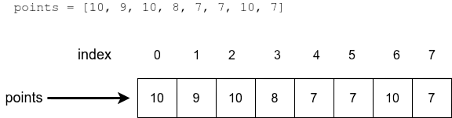
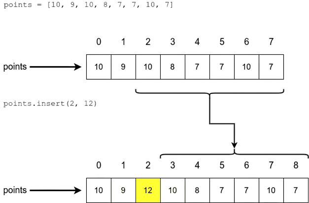

Llistes
Objectius d'aprenentatge
- Sabràs què són les llistes en Python
- Podràs accedir a un element específic d'una llista
- Sabràs afegir elements a una llista i eliminar-los
- Estaràs familiaritzat amb les funcions i mètodes predefinits de les llistes
Llistes en Python
Fins ara, als nostres programes hem emmagatzemat dades amb variables, on cada dada tenia normalment la seva pròpia variable amb nom. Això, òbviament, té algunes limitacions, ja que pot resultar feixuc definir variables separades per a tot quan hi ha moltes dades a gestionar.
Una llista en Python és una col·lecció de valors que s'accedeixen a través d'un únic nom de variable. El contingut de la llista s'escriu dins de claudàtors. Els valors continguts en una llista s'anomenen elements.
La següent ordre crea una nova llista buida:
llista = []En canvi, aquesta ordre crea una llista amb cinc elements:
llista = [7, 2, 2, 5, 2]Accedir als elements d'una llista
Els elements d'una llista es indexen exactament de la mateixa manera que els caràcters d'una cadena de text. Els índexs comencen des de zero, i l'últim índex és la longitud de la llista menys 1.

Un únic element d'una llista es pot accedir igual que un únic caràcter d'una cadena de text, amb claudàtors:
llista = [7, 2, 2, 5, 2]
print(llista[0])
print(llista[1])
print(llista[3])
print("La suma dels dos primers elements:", llista[0] + llista[1])7 2 5 La suma dels dos primers elements: 9
També es pot imprimir tot el contingut de la llista de cop:
llista = [7, 2, 2, 5, 2]
print(llista)[7, 2, 2, 5, 2]
Modificar el contingut d'una llista
A diferència de les cadenes de text, les llistes són mutables, cosa que significa que el seu contingut pot canviar. Pots assignar un nou valor a un element dins d'una llista, igual que pots assignar un nou valor a una variable:
llista = [7, 2, 2, 5, 2]
print(llista)
llista[1] = 3
print(llista)[7, 2, 2, 5, 2] [7, 3, 2, 5, 2]
La funció len() et dona el nombre d'elements d'una llista:
llista = [7, 2, 2, 5, 2]
print(len(llista))5
Exercici: Canviar el valor d'un element
Escriu un programa que inicialitzi una llista amb els valors [1, 2, 3, 4, 5]. Després, el programa hauria de demanar a l'usuari un índex i un nou valor, substituir el valor en aquest índex i imprimir la llista de nou. Això s'hauria de repetir fins que l'usuari introdueixi -1 com a índex. Pots suposar que tots els índexs introduïts seran vàlids.
Índex: 0 Nou valor: 10 [10, 2, 3, 4, 5] Índex: 2 Nou valor: 250 [10, 2, 250, 4, 5] Índex: 4 Nou valor: -45 [10, 2, 250, 4, -45] Índex: -1
Afegir elements a una llista
El mètode append() afegeix elements al final d'una llista. Funciona així:
nombres = []
nombres.append(5)
nombres.append(10)
nombres.append(3)
print(nombres)[5, 10, 3]
El següent exemple fa servir dues llistes diferents:
nombres = []
talles_sabates = []
nombres.append(5)
nombres.append(10)
nombres.append(3)
talles_sabates.append(37)
talles_sabates.append(44)
talles_sabates.append(40)
talles_sabates.append(28)
print("Nombres:")
print(nombres)
print("Talles de sabates:")
print(talles_sabates)Nombres: [5, 10, 3] Talles de sabates: [37, 44, 40, 28]
Exercici: Afegir elements a una llista
Escriu un programa que primer demani a l'usuari quants elements vol afegir. Després, el programa hauria de demanar tants valors com s'hagi indicat, un per un, i afegir-los a una llista en l'ordre introduït. Finalment, imprimeix la llista completa.
Quants elements vols afegir: 3 Element 1: 10 Element 2: 250 Element 3: 34 [10, 250, 34]
Afegir i eliminar en posicions específiques
Per inserir un element en una posició específica, pots usar el mètode insert, que afegeix un element a l'índex especificat. Els elements existents amb índex igual o superior es desplacen una posició a la dreta.

nombres = [1, 2, 3, 4, 5, 6]
nombres.insert(0, 10)
print(nombres)
nombres.insert(2, 20)
print(nombres)[10, 1, 2, 3, 4, 5, 6] [10, 1, 20, 2, 3, 4, 5, 6]
Eliminar elements d'una llista
Per eliminar elements d'una llista, hi ha dues maneres:
- Si coneixes l'índex, utilitza el mètode
pop(). - Si coneixes el valor, utilitza el mètode
remove().
El mètode pop() pren l'índex de l'element que voleu eliminar com a argument. El programa següent elimina elements als índexs 2 i 3 de la llista. Observeu com canvien els índexs dels elements restants quan n'elimineu un.
llista = [1, 2, 3, 4, 5, 6]
llista.pop(2)
print(llista)
llista.pop(3)
print(llista)[1, 2, 4, 5, 6] [1, 2, 4, 6]
El mètode pop() també retorna l'element eliminat:
llista = [4, 2, 7, 2, 5]
nombre = llista.pop(2)
print(nombre)
print(llista)7 [4, 2, 2, 5]
El mètode remove() elimina el primer element amb el valor especificat:
llista = [1, 2, 3, 4, 5, 6]
llista.remove(2)
print(llista)
llista.remove(5)
print(llista)[1, 3, 4, 5, 6] [1, 3, 4, 6]
Aquest mètode elimina la primera ocurrència del valor a la llista, de manera similar a com la funció de cadena find() retorna la primera ocurrència d'una subcadena:
llista = [1, 2, 1, 2]
llista.remove(1)
print(llista)
llista.remove(1)
print(llista)[2, 1, 2] [2, 2]
Exercici: Afegir i eliminar
Escriu un programa que demani a l'usuari si vol afegir o eliminar elements. Segons la tria, el programa ha d'afegir o eliminar un element del final d'una llista. El primer element afegit ha de ser 1, i cada nou element ha de ser un més gran que l'últim. La llista s'ha d'imprimir al començament i després de cada operació.
La llista és [] (a)fegir, (e)liminar o (s)ortir: a La llista és [1] (a)fegir, (e)liminar o (s)ortir: a La llista és [1, 2] (a)fegir, (e)liminar o (s)ortir: e La llista és [1] (a)fegir, (e)liminar o (s)ortir: s Adéu!
Podeu assumir que, si la llista està buida, no hi haurà cap intent d'eliminar elements.
Si l'element especificat no és a la llista, la funció remove() provoca un error. Igual que amb les cadenes de text, podem comprovar la presència d'un element amb l'operador in:
llista = [1, 3, 4]
if 1 in llista:
print("La llista conté l'element 1")
if 2 in llista:
print("La llista conté l'element 2")La llista conté l'element 1
Exercici: Mateixa paraula dues vegades
Escriu un programa que demani a l'usuari paraules. Si l'usuari escriu una paraula que ja havia escrit abans, el programa ha d'imprimir el nombre de paraules diferents escrites i acabar la seva execució.
Paraula: un Paraula: cop Paraula: hi Paraula: havia Paraula: cop Has escrit 4 paraules diferents
Ordenar llistes
Els elements d'una llista es poden ordenar de menor a major amb el mètode sort().
llista = [2, 5, 1, 2, 4]
llista.sort()
print(llista)[1, 2, 2, 4, 5]
Observa com aquest mètode modifica la llista original. De vegades no volem canviar l'ordre original, així que podem fer servir la funció sorted(), que retorna una nova llista ordenada:
llista = [2, 5, 1, 2, 4]
print(sorted(llista))[1, 2, 2, 4, 5]
Recorda la diferència entre les dues: sort() canvia l'ordre de la llista original, mentre que sorted() crea una còpia ordenada. Amb sorted() podem mantenir l'ordre original:
original = [2, 5, 1, 2, 4]
en_ordre = sorted(original)
print(original)
print(en_ordre)[2, 5, 1, 2, 4]
[1, 2, 2, 4, 5]
Exercici: Llista doble
Escriu un programa que demani a l'usuari valors i els afegeixi a una llista. Després de cada afegit, la llista s'ha d'imprimir de dues maneres:
- En l'ordre en què s'han afegit els elements
- Ordenada de menor a major
El programa ha d'acabar quan l'usuari escrigui 0.
Nou element: 3 La llista ara és: [3] La llista en ordre: [3]
Nou element: 1 La llista ara és: [3, 1] La llista en ordre: [1, 3]
Nou element: 9 La llista ara és: [3, 1, 9] La llista en ordre: [1, 3, 9]
Nou element: 5 La llista ara és: [3, 1, 9, 5] La llista en ordre: [1, 3, 5, 9]
Nou element: 0 Adéu!
Màxim, mínim i suma
Les funcions max() i min() retornen respectivament l'element més gran i el més petit d'una llista. La funció sum() retorna la suma de tots els elements.
llista = [5, 2, 3, 1, 4]
mes_gran = max(llista)
mes_petit = min(llista)
suma_llista = sum(llista)
print("Més petit:", mes_petit)
print("Més gran:", mes_gran)
print("Suma:", suma_llista)Més petit: 1 Més gran: 5 Suma: 15
Mètodes vs funcions
Hi ha dues maneres diferents de treballar amb llistes a Python, cosa que pot resultar confusa. Sovint faràs servir mètodes de llista, com ara append() o sort(). Aquests es fan servir amb l'operador punt (.) sobre la variable de la llista:
llista = []
# crides a mètodes
llista.append(3)
llista.append(1)
llista.append(7)
llista.append(2)
# una altra crida a un mètode
llista.sort()Algunes funcions, en canvi, accepten una llista com a argument. Ja hem vist que max(), min(), len() i sorted() en són exemples:
llista = [3, 2, 7, 1]
# crides a funcions amb la llista com a argument
mes_gran = max(llista)
mes_petit = min(llista)
longitud = len(llista)
print("Més petit:", mes_petit)
print("Més gran:", mes_gran)
print("Longitud de la llista:", longitud)
# una altra crida a una funció
# la llista és un argument i la funció retorna una còpia ordenada
en_ordre = sorted(llista)
print(en_ordre)Més petit: 1 Més gran: 7 Longitud de la llista: 4 [1, 2, 3, 7]
Una llista com a argument o valor de retorn
Igual que les funcions integrades anteriors, les nostres pròpies funcions també poden rebre una llista com a argument i produir una llista com a valor de retorn. La següent funció calcula el valor central en una llista ordenada, també anomenat valor mediana:
def mediana(llista: list):
ordenada = sorted(llista)
centre_llista = len(ordenada) // 2
return ordenada[centre_llista]La funció crea una versió ordenada de la llista donada com a argument i retorna l'element que es troba exactament al mig. Fixa't en l'operador de divisió entera // utilitzat aquí. L'índex d'una llista ha de ser sempre un enter.
La funció funciona així:
mides_sabates = [45, 44, 36, 39, 40]
print("La mediana de les mides de sabata és", mediana(mides_sabates))
edats = [1, 56, 34, 22, 5, 77, 5]
print("La mediana de les edats és", mediana(edats))La mediana de les mides de sabata és 40 La mediana de les edats és 22
Una funció també pot retornar una llista. La següent funció demana a l'usuari que introdueixi enters i retorna l'entrada com una llista:
def introduir_nombres():
nombres = []
while True:
entrada_usuari = input("Introdueix un enter, deixa buit per sortir: ")
if len(entrada_usuari) == 0:
break
nombres.append(int(entrada_usuari))
return nombresLa funció fa servir una variable auxiliar nombres, que és una llista. Tots els nombres introduïts per l'usuari s'afegeixen a la llista. Quan es surt del bucle, la funció retorna la llista amb la sentència return nombres.
Cridar la funció així:
nombres = introduir_nombres()
print("El nombre més gran és", max(nombres))
print("La mediana dels nombres és", mediana(nombres))podria mostrar això, per exemple:
Introdueix un enter, deixa buit per sortir: 5 Introdueix un enter, deixa buit per sortir: -22 Introdueix un enter, deixa buit per sortir: 4 Introdueix un enter, deixa buit per sortir: 35 Introdueix un enter, deixa buit per sortir: 1 Introdueix un enter, deixa buit per sortir: El nombre més gran és 35 La mediana dels nombres és 4
Aquest petit exemple demostra un dels usos més importants de les funcions: poden ajudar-te a dividir el teu codi en parts més petites, fàcilment comprensibles i lògiques.
Per descomptat, la mateixa funcionalitat es podria aconseguir sense escriure cap de les nostres pròpies funcions:
nombres = []
while True:
entrada_usuari = input("Introdueix un enter, deixa buit per sortir: ")
if len(entrada_usuari) == 0:
break
nombres.append(int(entrada_usuari))
ordenada = sorted(nombres)
centre_llista = len(ordenada) // 2
mediana = ordenada[centre_llista]
print("El nombre més gran és", max(nombres))
print("La mediana dels nombres és", mediana)En aquesta versió, seguir la lògica de programació és més difícil, ja que ja no està clar quines ordres formen part de quina funcionalitat. El codi compleix els mateixos propòsits - llegir l'entrada, calcular el valor mitjà, etc. - però l'estructura és menys clara.
Organitzar el teu codi en funcions separades millorarà la legibilitat del teu programa, però també farà més fàcil manejar conjunts lògics. Això al seu torn t'ajuda a verificar que el programa funciona com s'espera, ja que cada funció es pot provar per separat.
Un altre ús important de les funcions és fer que el codi sigui reutilitzable. Si necessites aconseguir alguna funcionalitat múltiples vegades en el teu programa, és una bona idea crear la teva pròpia funció i anomenar-la adequadament:
print("Mides de sabata:")
mides_sabata = introduir_nombres()
print("Pesos:")
pesos = introduir_nombres()
print("Alçades:")
alçades = introduir_nombres()Exercici: La longitud d'una llista
Escriu una funció anomenada longitud que rep una llista com a argument i retorna la longitud de la llista.
llista = [1, 2, 3, 4, 5]
resultat = longitud(llista)
print("La longitud és", resultat)
# la llista donada com a argument no necessita estar emmagatzemada en cap variable
resultat = longitud([1, 1, 1, 1])
print("La longitud és", resultat)La longitud és 5 La longitud és 4
Exercici: Mitjana aritmètica
Escriu una funció anomenada mitjana, que rep una llista d'enters com a argument. La funció retorna la mitjana aritmètica dels valors de la llista.
llista = [1, 2, 3, 4, 5]
resultat = mitjana(llista)
print("El valor mitjà és", resultat)El valor mitjà és 3.0
Exercici: El rang d'una llista
Escriu una funció anomenada rang_de_llista, que rep una llista d'enters com a argument. La funció retorna la diferència entre el valor més petit i el més gran de la llista.
llista = [1, 2, 3, 4, 5]
resultat = rang_de_llista(llista)
print("El rang de la llista és", resultat)El rang de la llista és 4
Conceptes clau
- Llista: col·lecció de valors sota un únic nom amb elements accessibles per índex.
- Indexació: accés als elements mitjançant índexs que comencen des de zero.
- Mutabilitat: les llistes poden modificar-se després de la creació.
- Mètodes de llista: operacions com
append(),insert(),pop()iremove(). - Ordenació:
sort()modifica la llista original,sorted()retorna una còpia ordenada. - Funcions amb llistes:
len(),max(),min()isum()operen sobre llistes. - Llistes com a arguments: les funcions poden rebre llistes com a paràmetres.
- Llistes com a valors de retorn: les funcions poden retornar llistes com a resultat.
- Mediana: valor central d'una llista ordenada.
- Divisió entera: operador
//per a càlculs d'índexs.